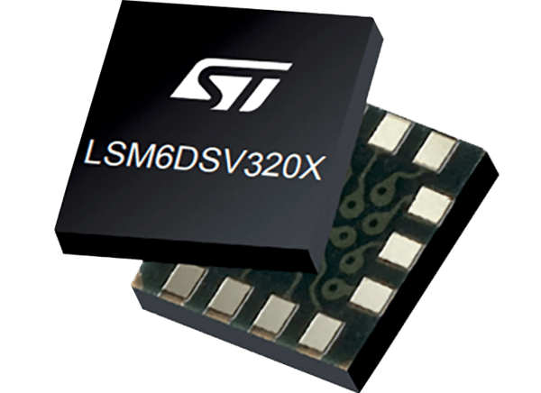

IA de borda e sensores no esporte
Wearables com sensores e inteligência artificial embarcada já analisam o desempenho de atletas em tempo real, direto no campo, sem esperar pela nuvem.

O que é IA de borda
Na IA de borda (edge AI), os dados são processados no próprio dispositivo, perto de onde são coletados, em vez de serem enviados para um servidor na nuvem. O resultado é uma resposta muito mais rápida e que não depende de conexão com a internet, algo essencial à beira de um campo de futebol.
Do dado bruto à decisão
Os wearables coletam dados físicos e biomecânicos do atleta, como aceleração, velocidade, fadiga muscular e frequência cardíaca. Modelos de aprendizado de máquina analisam esses dados na hora e identificam padrões de resistência, risco de lesão e movimentos ineficientes.
Com isso, a comissão técnica pode ajustar a carga de treino e a recuperação de cada jogador. Há motivo financeiro também: nas cinco maiores ligas de futebol da Europa, o custo com lesões subiu cerca de 30%, de € 553,62 milhões para € 704,89 milhões.
Um exemplo real é o rastreador STATSports Apex, usado por clubes da Premier League. Ele usa o chip nRF52840, da Nordic Semiconductor, com sensores inerciais e Bluetooth Low Energy para processar os movimentos no próprio dispositivo.
O sensor: LSM6DSV320X, da ST
O artigo destaca a IMU (unidade de medição inercial) LSM6DSV320X, da STMicroelectronics, pensada para esportes de alto impacto. Em um único chip ela reúne:

- Acelerômetro de 3 eixos para movimentos normais (low-g);
- Acelerômetro de 3 eixos para impactos fortes, de até ±320 g (high-g);
- Giroscópio de 3 eixos;
- Núcleo de aprendizado de máquina (MLC) e máquina de estados finitos (FSM), que reconhecem movimentos dentro do próprio sensor;
- Autoconfiguração adaptativa (ASC), que ajusta o sensor sozinho conforme a situação;
- Memória FIFO de 4,5 KB e algoritmos de fusão de sensores embutidos.
Por que processar dentro do sensor?
Quando o próprio sensor reconhece o movimento, o microcontrolador não precisa ler e analisar cada amostra. Ele pode ficar em modo de baixo consumo e só "acordar" quando algo importante acontece. Em um wearable, isso significa mais horas de bateria, e é a mesma ideia que se usa em qualquer projeto de IoT alimentado por bateria.
Conclusão
A combinação de sensores MEMS e IA de borda muda a forma de acompanhar atletas: em vez de só reagir a lesões e quedas de rendimento, a análise passa a ser preditiva, preventiva e personalizada para cada jogador.